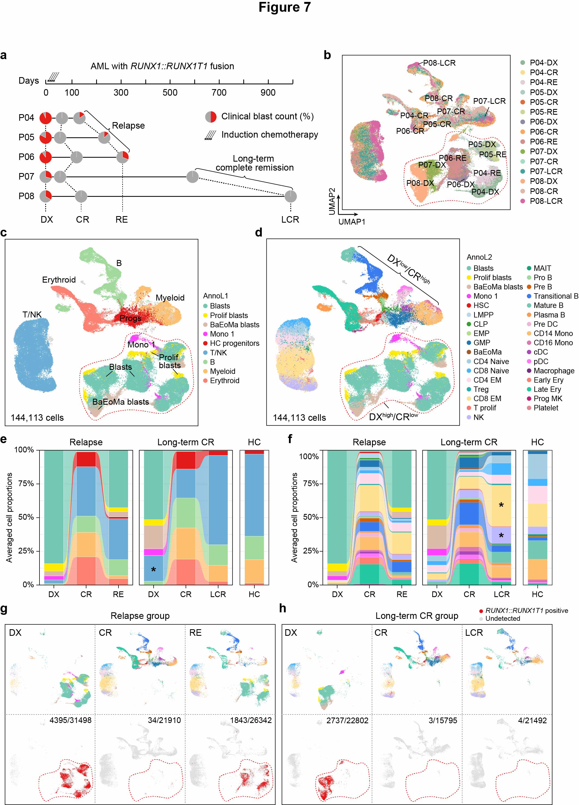

7 Figure 7
 Fig.7 | Longitudinal analysis of BM compositions in t(8;21) AML patients with distinct outcomes frontline chemotherapy.
a, Overview of serially collected BM aspirates from five t(8;21) AML patients. For each patient, pie charts illustrate the timing of sample collections relative to the initial diagnosis and the clinical blast count for each sample. The patients were grouped into those with relapsed disease or long-term complete remission. b, UMAP plot of all 15 t(8;21) AML longitudinal samples without batch correction. Colors represent samples collected from different time points. The red dashed box outlines the bulk of leukemic cells. c, UMAP visualization of 9 broad cell types (annoL1) from t(8;21) AML longitudinal samples. Colors indicate different cell types. Grey indicates low-quality cells. The total cell number is indicated at the bottom-left corner. d, UMAP visualization of 33 detailed cell types (annoL2) from t(8;21) AML longitudinal samples, with colors representing level 2 cell type annotations. Grey indicates low-quality cells. The total number of sequenced cells is indicated in the bottom-left corner. e, Alluvial diagram displaying the average proportions of annoL1 cell types at different times of sample collection. The average proportions of corresponding cell types of healthy BMs are shown at right. Cell types were color-coded based on annotations from panel c. f, Alluvial diagram displaying the average proportions of annoL2 cell types at different times of sample collection. The average proportions of corresponding cell types of healthy BMs are shown at right. Cell types were color-coded based on annotations from panel d. g, Top panel: UMAP facet distribution of the t(8;21) AML relapse group at initial diagnosis, complete remission, and relapse stages, with cell types color-coded based on annotations from panel d. Bottom panel: UMAP facet plots of cells expressing RUNX1::RUNX1T1 at these same stages, highlighting the distribution of fusion transcript-positive cells in the t(8;21) AML relapse group. Red dots indicate RUNX1::RUNX1T1-positive cells, while grey dots represent cells where fusion transcripts were undetected. The total number of cells at each longitudinal stage of t(8;21) AML is shown at the top-right corner. The number before the slash represents the count of RUNX1::RUNX1T1-positive cells, and the number after the slash represents the total number of cells. h, Top panel: UMAP facet distribution of the t(8;21) AML long-term complete remission group at initial diagnosis, complete remission, and long-term complete remission stages, with cell types color-coded based on annotations from panel d. Bottom panel: UMAP facet plots of cells expressing RUNX1::RUNX1T1 at these same stages, highlighting the distribution of fusion transcript-positive cells in the t(8;21) AML relapse group. Red dots indicate RUNX1::RUNX1T1-positive cells, while grey dots represent cells where fusion transcripts were undetected. The total number of cells at each longitudinal stage of t(8;21) AML is shown at the top-right corner. The number before the slash represents the count of RUNX1::RUNX1T1-positive cells, and the number after the slash represents the total number of cells.
7.1 (b) UMAP by samples
my_color <- c("#91B897", "#FCDD8D", "#E2CDDA", "#AFC9C6", "#E06C3E", "#CDD695", "#9188A4", "#FBA95E", "#D58E8E", "#8EB052",
"#A6DDC2", "#46A39B", "#FBAD82", "#DFB7A9", "#D966A4")
scAE.anno <- read_rds(paste0(in_dir, "Table1.3.scAE_anno.rds"))
p2 <- DimPlot(scAE.anno, reduction = "umap", group.by = "orig.ident", label = T, repel = T, raster = T, cols = my_color, pt.size = 0.5)
pdf(paste0(out_dir, "Fig1.2.1.umap_cluster_raw.pdf"), width = 5.5, height = 4.5)
p2
dev.off()7.2 (c-d) UMAP by annoL1 & annoL2
annoL1_color <- c("#73C8B4", "#FFEA00", "#DBBBA9", "#FF40FF", "#E31A1C", "#6BAED6", "#A1D99B", "#FDBF6F", "#FB8072", "#D9D9D9")
annoL1_name <- c("Progs", "Progs_Prolif", "Progs_BaEoMa", "Mono1", "HC_Pros", "T.NK", "B", "Myeloid", "Erythroid", "LowQual")
names(annoL1_color) <- annoL1_name
annoL2_name <- c(
c("Progs", "Progs_Prolif", "Progs_BaEoMa", "Mono1"),
c("HSC", "LMPP", "CLP", "EMP", "GMP", "BaEoMa"),
c("CD4Naive", "CD8Naive", "CD4EM", "Treg", "CD8EM", "T_prolif", "NK", "MAIT"),
c("ProB", "PreB", "TransitionalB", "MatureB", "PlasmaB"),
c("Pre_DC", "CD14Mono", "CD16Mono", "cDC", "pDC", "Macrophage"),
c("EarlyE", "LateE", "ProgMK", "Platelet", "LowQual"))
annoL2_color <- c(
c("#73C8B4", "#FFEA00", "#DBBBA9", "#FF40FF"),
c("#E31A1C", "#B8D8E9", "#33A02C", "#B2DF8A", "#1F78B4", "#A65628"),
c("#A6CEE3", "#45B4FF", "#FDDAEC", "#27ADAE", "#FEE090", "#F8766D", "#BEB9FF", "#1B9E77"),
c("#A1D99B", "#D95F02", "#387CF0", "#73C8B4", "#FF9B4F"),
c("#F1B6DA", "#FDBF6F", "#DE77AE", "#AB47BC", "#FF77F8", "#762A83"),
c("#FB8072", "#23C8A1", "#C51B7D", "#E48792", "#D9D9D9"))
names(annoL2_color) <- annoL2_name
p1 <- DimPlot(scAE.anno, reduction = "umap", group.by = "annoL1",
label = T, repel = T, raster = T, cols = annoL1_color, pt.size = 0.5)
p2 <- DimPlot(scAE.anno, reduction = "umap", group.by = "annoL2",
label = T, repel = T, raster = T, cols = annoL2_color, pt.size = 0.5)
pdf(paste0(out_dir, "Fig1.3.1.umap_cluster_anno.pdf"), width = 12, height = 4.5)
p1 + p2 + p3
dev.off()7.3 (e) Alluvial diagram of relapse group
dat1 <- read.xlsx(paste0(in_dir, "Table3.rmLQ_scAE_anno.stat.xlsx"), sheet = 4)[, 8:14] %>%
gather("Stage", "Freq", -seurat_clusters) %>%
mutate(Freq = ifelse(is.na(Freq), 0, Freq),
Stage = factor(Stage, levels = g_list),
seurat_clusters = factor(seurat_clusters, levels = annoL1_name)) %>%
mutate(Group = ifelse(Stage %in% g_list[1:3], "1RE", "2CR"))
p1 <- dat1 %>%
ggplot(aes(x = Stage, y = Freq, fill = seurat_clusters, stratum = seurat_clusters, alluvium = seurat_clusters)) +
geom_col(width = 0.6) +
geom_alluvium(width = 0.6, alpha = 0.7, knot.pos = 1/3, knot.prop = T) +
geom_stratum(width = 0.6, color = "white", linewidth = 0.1) +
facet_grid(~ Group, scales = "free", space = "free") +
scale_fill_manual(name = "annoL1", values = annoL1_color) +
theme_bw() + labs(y = "Proportions") + theme(legend.key.size = unit(0.4, "cm"))
pdf(paste0(out_dir, "Fig7e.pdf"), width = 3, height = 4)
p1
dev.off()7.4 (f) Alluvial diagram of LCR group
dat3 <- read.xlsx(paste0(in_dir, "Table3.rmLQ_scAE_anno.stat.xlsx"), sheet = 6)[, 8:14] %>%
gather("Stage", "Freq", -seurat_clusters) %>%
mutate(Freq = ifelse(is.na(Freq), 0, Freq),
Stage = factor(Stage, levels = g_list),
seurat_clusters = factor(seurat_clusters, levels = annoL2_name)) %>%
mutate(Group = ifelse(Stage %in% g_list[1:3], "1RE", "2CR"))
p3 <- dat3 %>%
ggplot(aes(x = Stage, y = Freq, fill = seurat_clusters, stratum = seurat_clusters, alluvium = seurat_clusters)) +
geom_col(width = 0.6) +
geom_alluvium(width = 0.6, alpha = 0.7, knot.pos = 1/3, knot.prop = T) +
geom_stratum(width = 0.6, color = "white", linewidth = 0.01) +
facet_grid(~ Group, scales = "free", space = "free") +
scale_fill_manual(name = "annoL2", values = annoL2_color) +
theme_bw() + labs(y = "Proportions") + theme(legend.key.size = unit(0.4, "cm"))
pdf(paste0(out_dir, "Fig7f.pdf"), width = 3, height = 4)
p3
dev.off()7.5 (g-h) UMAP by stage
scAE.anno.sub <- scAE.anno %>% subset(annoL1 != "LowQual")
annoL1_color <- annoL1_color[1:9]
annoL2_color <- annoL2_color[1:33]
pdf(paste0(out_dir, "Fig7g-h_1.pdf"), width = 13.5, height = 8)
DimPlot(scAE.anno.sub, reduction = "umap", split.by = "group", group.by = "annoL2", cols = annoL2_color,
label = F, repel = T, raster = T, pt.size = 0.5, ncol = 3)
dev.off()
scAE.anno.sub2 <- scAE.anno.sub
scAE.anno.sub2@meta.data <- scAE.anno.sub2@meta.data %>%
mutate(fus_group = ifelse(is.na(fus_group), "NA", fus_group))
pdf(paste0(out_dir, "Fig7g-h_2.pdf"), width = 8, height = 5.5)
DimPlot(scAE.anno.sub2, reduction = "umap", split.by = "group", group.by = "fus_group", ncol = 3, order = T,
label = F, repel = T, raster = T, na.value = "#E0E0E0", cols = c("Positive" = "#E71012", "NA" = "#E0E0E0"), pt.size = 0.5)
dev.off()